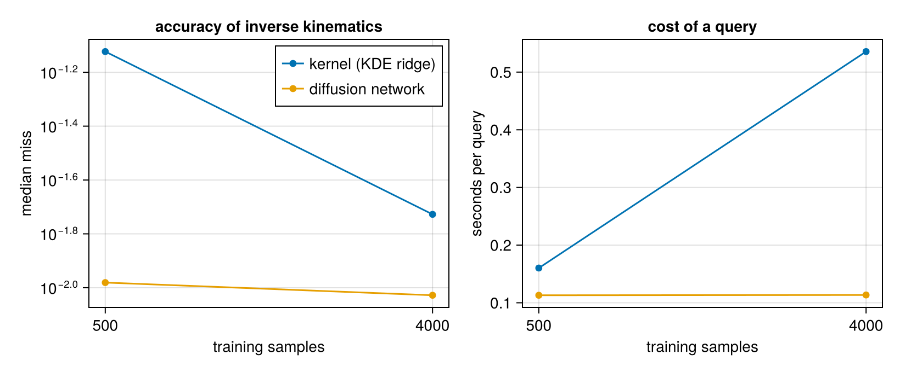
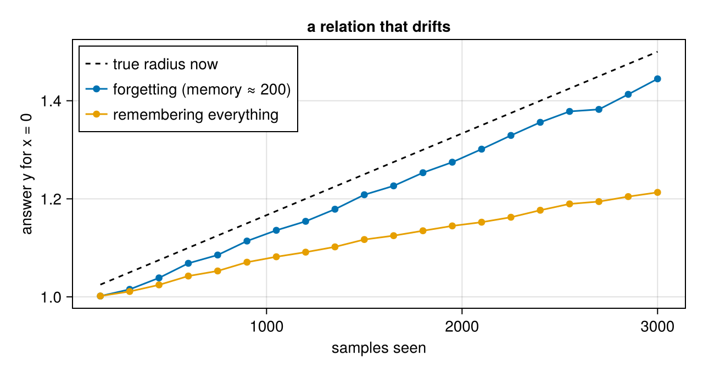

What does the network add? A kernel baseline
Download as a Jupyter notebook
The diffusion networks of the earlier tutorials learn a density and answer queries on its ridge. A classical method does the same without training: a Gaussian kernel density estimate (KDE) of the samples. Its ridge is a relation too, estimated nonparametrically (Genovese et al., 2014), and since a Gaussian KDE is a Gaussian mixture with one component per sample, the package can query it exactly, with no network at all.
So the honest question for any learned model: does it beat the kernel baseline, on the same data? This tutorial answers it on the robot arm of tutorial 3, for small and larger datasets. (Background: the vault note Kernel Methods for Implicit Learning.)
using VariationalDiffusion, Lux, LuxCore, Random, LinearAlgebra, Statistics, Printf, Optimisers
using DifferentiationInterface, Zygote
using CairoMakieThe arm, the data, the queries
As in tutorial 3: a two-link arm, configurations $z = (\theta_1, \theta_2, x, y)$ sampled with small sensor noise, and inverse-kinematics queries at targets whose exact solutions lie inside the training range. The score of an answer is how far its pose puts the hand from the target.
const L1, L2 = 1.0, 0.7
fk(θ1, θ2) = (L1 * cos(θ1) + L2 * cos(θ1 + θ2), L1 * sin(θ1) + L2 * sin(θ1 + θ2))
function ik(x, y)
c = (x^2 + y^2 - L1^2 - L2^2) / (2L1 * L2)
abs(c) > 1 && return nothing
return map(s -> (θ2 = s * acos(c); (atan(y, x) - atan(L2 * sin(θ2), L1 + L2 * cos(θ2)), θ2)), (1, -1))
end
const Θ1, Θ2 = (-π / 2, π / 2), (-2.6, 2.6)
function sample_arm(rng, n; noise = 0.01)
θ1 = Θ1[1] .+ (Θ1[2] - Θ1[1]) .* rand(rng, n)
θ2 = Θ2[1] .+ (Θ2[2] - Θ2[1]) .* rand(rng, n)
xy = fk.(θ1, θ2)
return vcat(θ1', θ2', first.(xy)', last.(xy)') .+ noise .* randn(rng, 4, n)
end
const sched = VPSDE()
const INVERSE = [0.0, 0.0, Inf, Inf]
const NODES = field_nodes(Xoshiro(1), 4; samples = 4, levels = range(0.002, 0.03; length = 6))
targets = [(r * cos(φ), r * sin(φ)) for r in range(0.6, 1.55; length = 6) for φ in range(-1.2, 1.2; length = 9)]
inside(tg) = all(s -> Θ1[1] ≤ s[1] ≤ Θ1[2] && Θ2[1] + 0.2 ≤ s[2] ≤ Θ2[2] - 0.2, ik(tg...))
queries = [(tg, elbow) for tg in filter(inside, targets) for elbow in (1.0, -1.0)]
function evaluate(model, ps, st)
m = ImplicitDiffusion(model, NODES)
t0 = time()
misses = map(queries) do (tg, elbow)
z = first(implicit_infer(m, [0.0, elbow, tg...], INVERSE, ps, st; maxiters = 300)).z
hypot((fk(z[1], z[2]) .- tg)...)
end
return (median = median(misses), p90 = quantile(misses, 0.9), seconds_per_query = (time() - t0) / length(queries))
end
length(queries)66The kernel model
kde_predictor builds the KDE as a noise predictor; kde_bandwidth chooses its bandwidth by held-out log-likelihood, i.e. as the best density, without looking at the queries.
function kernel_result(data)
h = kde_bandwidth(data)
model = kde_predictor(sched, data; bandwidth = h)
ps, st = LuxCore.setup(Xoshiro(0), model)
return (bandwidth = round(h; digits = 3), evaluate(model, ps, st)...)
endThe network
The same denoising network as tutorial 3, but trained on a fixed dataset of the same samples the kernel sees, so that the comparison is fair. (Tutorial 3 drew fresh samples at every step, which a real application cannot.)
const FREQ = [0.5, 1.0, 2.0, 4.0, 8.0]
embed(t) = vcat(sin.((2π .* t) .* FREQ), cos.((2π .* t) .* FREQ))
input(z, t) = vcat(z, embed(t) .* ones(eltype(z), 1, size(z, 2)))
net = Chain(Dense(14 => 128, swish), Dense(128 => 128, swish), Dense(128 => 128, swish), Dense(128 => 4))
f64(x::AbstractArray) = Float64.(x); f64(x::NamedTuple) = map(f64, x); f64(x) = x
function network_result(data; steps = 12_000, rng = Xoshiro(2))
ps, st = Lux.setup(rng, net)
ts = Training.TrainState(net, ps, st, Optimisers.Adam(1.0f-3))
for k in 1:steps
k == steps ÷ 2 && (ts = Training.TrainState(net, ts.parameters, ts.states, Optimisers.Adam(3.0f-4)))
z₀ = data[:, rand(rng, 1:size(data, 2), 512)] # resample the fixed dataset
t = 1e-3 .+ 0.2 .* rand(rng, 1, 512)
ε = randn(rng, 4, 512)
zₜ = alpha.(Ref(sched), t) .* z₀ .+ sigma.(Ref(sched), t) .* ε
_, _, _, ts = Training.single_train_step!(AutoZygote(), MSELoss(), (Float32.(vcat(zₜ, embed(t))), Float32.(ε)), ts)
end
return evaluate(NoisePredictor(net, sched; input), f64(ts.parameters), ts.states)
endThe comparison
ns = [500, 4000]
results = map(ns) do n
data = sample_arm(Xoshiro(n), n)
(n = n, kernel = kernel_result(data), network = network_result(data))
end
for r in results
@printf "n = %4d kernel (h = %.3f): median miss %.4f, p90 %.4f, %.2f s/query\n" r.n r.kernel.bandwidth r.kernel.median r.kernel.p90 r.kernel.seconds_per_query
@printf " network: median miss %.4f, p90 %.4f, %.2f s/query\n" r.network.median r.network.p90 r.network.seconds_per_query
end
fig = Figure(size = (820, 340))
ax1 = Axis(fig[1, 1]; xscale = log10, yscale = log10, xlabel = "training samples", ylabel = "median miss",
title = "accuracy of inverse kinematics", xticks = ns)
scatterlines!(ax1, ns, [r.kernel.median for r in results]; label = "kernel (KDE ridge)")
scatterlines!(ax1, ns, [r.network.median for r in results]; label = "diffusion network")
axislegend(ax1; position = :rt)
ax2 = Axis(fig[1, 2]; xscale = log10, xlabel = "training samples", ylabel = "seconds per query",
title = "cost of a query", xticks = ns)
scatterlines!(ax2, ns, [r.kernel.seconds_per_query for r in results]; label = "kernel")
scatterlines!(ax2, ns, [r.network.seconds_per_query for r in results]; label = "network")
fig
Why the network wins
The arm's configurations form a two-dimensional surface in a four-dimensional space. A KDE answers a query by climbing to the ridge of a sum of bumps centred on the samples; with few samples that ridge is lumpy, and the answers snap towards nearby training configurations. The error is then set by how densely the samples cover the surface, and it falls only as more samples fill it in. A different bandwidth does not rescue the small dataset: in a separate run with the bandwidth tuned on the query errors themselves (which favours the kernel), the 500-sample kernel still missed by about 0.07. The network instead learns a smooth surface between the samples: it generalises where the kernel memorises.
A second difference is cost. The kernel evaluates every sample at every step of every query, so queries slow down linearly with the data; the network's cost is fixed by its size.
Data that drift: an online, forgetting kernel model
The kernel model has one property the network lacks: it can be updated sample by sample, and it can forget. OnlineKDE takes a stream through observe!: each sample is merged into a nearby centre or becomes a new one, every older weight is multiplied by a forgetting factor (memory of about $1/(1 - \text{forget})$ samples), and a budget caps the number of centres by merging the lightest into its neighbour (Kristan et al., 2011).
A relation that drifts: points on a circle whose radius grows from 1.0 to 1.5 over 3000 samples. Along the stream, ask "$y$ given $x = 0$" of a model that remembers everything and of one with a memory of about 200 samples.
K = 3000
radius(k) = 1.0 + 0.5 * k / K
srng = Xoshiro(4)
stream = [(φ = 2π * rand(srng); radius(k) .* [cos(φ), sin(φ)] .+ 0.02 .* randn(srng, 2)) for k in 1:K]
cnodes = field_nodes(Xoshiro(1), 2; samples = 4)
function answer_y(kde)
pred = kde_predictor(sched, kde)
ps, st = LuxCore.setup(Xoshiro(0), pred)
roots, _ = implicit_roots(ImplicitDiffusion(pred, cnodes), [0.0, 0.0], [Inf, 0.0], ps, st; nstarts = 12, spread = 1.5)
return maximum(r.z[2] for r in roots) # the upper branch
end
remember = OnlineKDE(2; bandwidth = 0.05, forget = 1.0, budget = 400)
forgetful = OnlineKDE(2; bandwidth = 0.05, forget = 0.995, budget = 400)
checkpoints, ans_remember, ans_forget = Int[], Float64[], Float64[]
for (k, z) in enumerate(stream)
observe!(remember, z)
observe!(forgetful, z)
if k % 150 == 0
push!(checkpoints, k); push!(ans_remember, answer_y(remember)); push!(ans_forget, answer_y(forgetful))
end
end
(centres = (remember = size(remember.centres, 2), forgetful = size(forgetful.centres, 2)),
final = (truth = radius(K), remember = ans_remember[end], forgetful = ans_forget[end]))(centres = (remember = 400, forgetful = 400), final = (truth = 1.5, remember = 1.21308859119576, forgetful = 1.4446801139602228))fig = Figure(size = (640, 340))
ax = Axis(fig[1, 1]; xlabel = "samples seen", ylabel = "answer y for x = 0", title = "a relation that drifts")
lines!(ax, checkpoints, radius.(checkpoints); color = :black, linestyle = :dash, label = "true radius now")
scatterlines!(ax, checkpoints, ans_forget; label = "forgetting (memory ≈ 200)")
scatterlines!(ax, checkpoints, ans_remember; label = "remembering everything")
axislegend(ax; position = :lt)
fig
The forgetting model follows the current relation with a lag of about its memory; the remembering one answers with the average of everything it has seen. Neither is wrong in general: forgetting is right when the system changes, remembering when the variation is noise. Both stay at 400 centres, so a query costs the same after 3000 samples as after 400. A network would have to be retrained, or trained continually, to do the same.
When the kernel is the right tool
- As the baseline for any learned relation, as here: cheap to build, no training, exact derivatives, and an honest bar to clear.
- With very little data in very few dimensions, where a network has nothing to generalise from and the kernel's guarantees are well understood.
- For uncertainty: a Gaussian-process version gives a belief over the relation itself (see the vault note above), which the network does not.
- For streams and drift: updated sample by sample, with forgetting and a fixed budget.
References
- Genovese, C. R.; Perone-Pacifico, M.; Verdinelli, I. and Wasserman, L. (2014). Nonparametric ridge estimation. The Annals of Statistics 42.
- Kristan, M.; Leonardis, A. and Skočaj, D. (2011). Multivariate online kernel density estimation with Gaussian kernels. Pattern Recognition 44, 2630–2642.
This page was generated using Literate.jl.